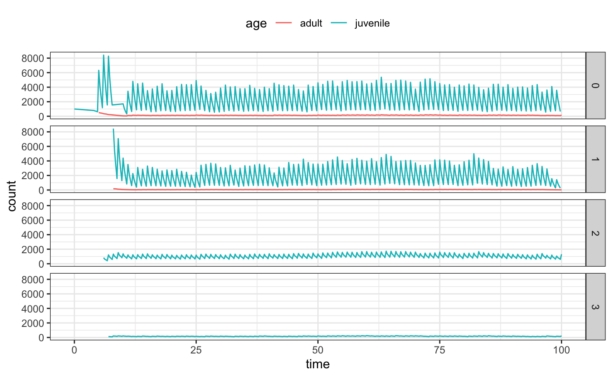

Run simulation:
library(dplyr)
library(ggplot2)
library(tekkamaki)
result = tekka("--seed=42 -y100 -l3") %>% print()
#> # A tibble: 1 x 2
#> sample_family demography
#> <list> <list>
#> 1 <tibble [7,479 × 6]> <tibble [4,483 × 5]>A result is a nested tibble with two columns: sample_family and demography:
sample_family = result$sample_family[[1L]] %>% print()
#> # A tibble: 7,479 x 6
#> id father_id mother_id birth_year location capture_year
#> <int> <int> <int> <int> <int> <int>
#> 1 134 0 0 -4 0 NA
#> 2 135 0 0 -4 0 NA
#> 3 133 134 135 1 0 NA
#> 4 137 0 0 -4 0 NA
#> 5 138 0 0 -4 0 NA
#> 6 136 137 138 1 1 NA
#> 7 132 133 136 5 1 NA
#> 8 141 0 0 -4 0 NA
#> 9 142 0 0 -4 0 NA
#> 10 140 141 142 1 0 NA
#> # … with 7,469 more rows
demography = result$demography[[1L]] %>% print()
#> # A tibble: 4,483 x 5
#> year season location age count
#> <dbl> <dbl> <dbl> <dbl> <dbl>
#> 1 0 3 0 4 200
#> 2 1 0 0 0 8466
#> 3 1 3 0 0 1491
#> 4 1 3 2 0 1491
#> 5 2 0 2 1 1491
#> 6 2 3 2 1 242
#> 7 2 3 3 1 275
#> 8 3 0 2 2 242
#> 9 3 0 3 2 275
#> 10 3 3 2 2 174
#> # … with 4,473 more rowsHere is an example of visualizing demography:
library(ggplot2)
df = demography %>%
dplyr::mutate(time = year + 0.25 * season) %>%
dplyr::group_by(time, location, age = ifelse(age > 4, "adult", "juvenile")) %>%
dplyr::summarise(count = sum(count))
ggplot(df, aes(time, count)) +
geom_path(aes(colour = age, group = age)) +
facet_grid(location ~ .) +
theme_bw() +
theme(legend.position = "top")
load_all(compile = TRUE)
result = tekka("-y200") %>% print()
demography = result$demography[[1L]] %>% print()
df = demography %>%
dplyr::mutate(time = year + 0.25 * season) %>%
dplyr::group_by(time, location, age = ifelse(age >= 4, "adult", "juvenile")) %>%
dplyr::summarise(count = sum(count))
ggplot(df, aes(time, count)) +
geom_path(aes(colour = age, group = age)) +
facet_grid(location ~ .) +
theme_bw() +
theme(legend.position = "top")